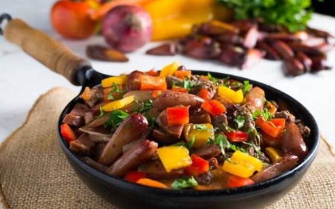
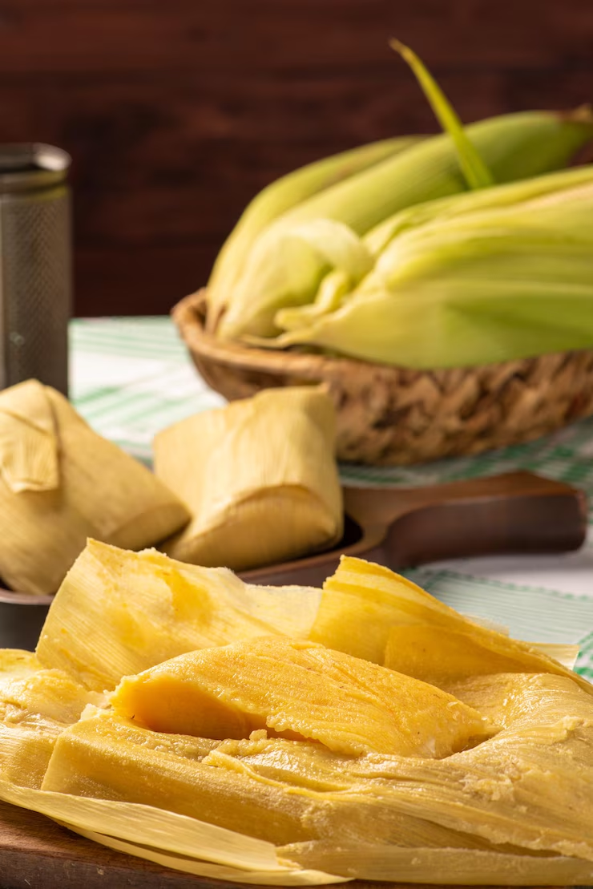
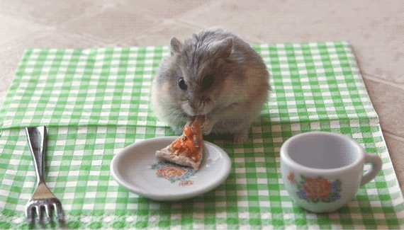

COMIDAS TRADICIONAIS DO CAMPO
Entrevero de Pinhão:
Prato típico do Paraná, feito com pinhão, carne, farinha de mandioca e outros ingredientes.

Vaca Atolada:
Prato mineiro, feito com carne, mandioca e outros ingredientes, cozidos juntos em fogo baixo.

Pamonha:
Prato feito com milho, açúcar e outros ingredientes, cozido em folhas de bananeira.

